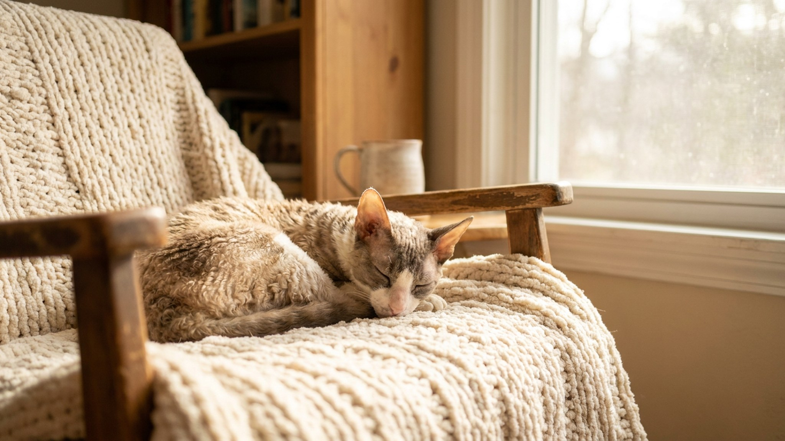

На ощупь корниш-рекс горячий, как грелка, — а через час ищет хозяина, чтобы залезть под плед. Парадокс объясняется просто: у этой породы нет остевого волоса, только мягкий волнистый подшёрсток, и тело отдаёт тепло в разы быстрее. Ниже — как устроена кудрявая шерсть, почему кожа требует особого внимания и что ещё важно знать до того, как взять такую кошку домой.
🐾 Дневник здоровья питомца — в кармане
Вес, прививки, симптомы и напоминания в одном приложении. AnimaLife следит за здоровьем питомца вместо вас.
Обычная кошка носит три слоя шерсти: длинный остевой, промежуточный ость и мягкий пух. У корниш-рекса остевого и промежуточного нет совсем — только пуховый подшёрсток, который образует плотные мелкие волны по всему телу. Именно поэтому порода выглядит «голой» рядом с другими кошками и приятно-тёплой на ощупь: изолирующих слоёв меньше, кожа ближе к поверхности.
Шерсть короткая и не линяет так обильно, как у большинства пород, — это плюс для аллергиков. Но сальные железы работают в том же режиме, а «вывести» жир через длинный мех некуда, поэтому кожа жиреет заметно быстрее.
Тонкий подшёрсток не держит тепло — при температуре ниже 20–22 °C корниш-рексу некомфортно. Кошка сама решает эту задачу: забирается на батарею, под одеяло, на ноутбук или к хозяину. Чтобы не превращать это в борьбу, дайте ей альтернативу:
Сквозняки и открытые окна — главный враг: порода застужается легче, чем кажется. Следите, чтобы кошка не лежала на холодном полу длительное время.
Из-за быстрого накопления кожного жира корниш-рекса нужно купать чаще, чем среднестатистическую кошку, — раз в 2–4 недели, используя мягкий шампунь для кошек. Если пропустить несколько купаний, шерсть становится слипшейся и неприятной на ощупь, а кожа может воспаляться. Между купаниями можно протирать складки кожи влажной салфеткой без спирта.
Уши у корниш-рекса большие, открытые и практически без защитного волоса внутри — пыль и сера накапливаются быстро. Осматривайте их раз в неделю и аккуратно очищайте ватным диском с лосьоном для чистки ушей. Если заметили тёмный налёт, запах или кошка трёт ухо лапой — повод показать ветеринару, а не самостоятельно искать причину.
Корниш-рекс — не диванная кошка. Он подвижен, общителен, легко обучается трюкам и привязывается к хозяину не меньше собаки. Порода плохо переносит одиночество и быстро находит себе занятие без вашего участия — чаще всего не то, которое вам понравится.
Характер открытый и незлобивый: кошка идёт на руки к гостям, не боится детей, терпит ветеринарный осмотр спокойнее многих пород.
🐾 Не уверены, что это опасно?
Опишите симптом в AnimaLife — AI-ветеринар за минуту подскажет, что в пределах нормы, а когда пора к врачу.
🐾 Понравился разбор?
Подпишитесь на канал — каждый день разбираем по одному тревожному симптому у кошек и собак: что в пределах нормы, а когда пора к врачу. Подпишитесь, чтобы не пропустить разбор, который может спасти здоровье вашего питомца.
Корниш-рекс подходит тем, кто готов к активному компаньону: купать раз в месяц, следить за ушами, не допускать сквозняков и выделить тёплый угол. Взамен — кошка, которая греет вас сама, прыгает на руки и интересуется всем, что вы делаете.
Материал носит информационный характер и не заменяет очную консультацию ветеринара.